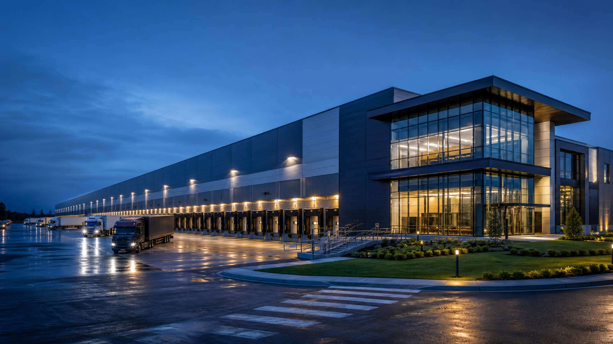

Ground strategy
Piling and slab design optimized for automated storage loads.
An automated distribution campus engineered for continuous operation, multimodal connectivity and future expansion.
The client required a new European distribution hub that could consolidate three legacy sites while increasing automation and reducing energy demand.
NORDCORE led integrated engineering, procurement, construction and commissioning across warehouse, transport, utilities and administration assets.
Long-lead automation equipment, complex ground conditions and multiple interfaces required early technical decisions.
Piling and slab design optimized for automated storage loads.
Federated BIM connected structure, MEP and automation packages.
Work zones synchronized with supplier commissioning windows.
Integrated performance trials validated every logistics path.



“NORDCORE managed the technical interfaces with unusual clarity. The facility reached target throughput ahead of the operational ramp-up plan.”Operations Director · European Logistics Group